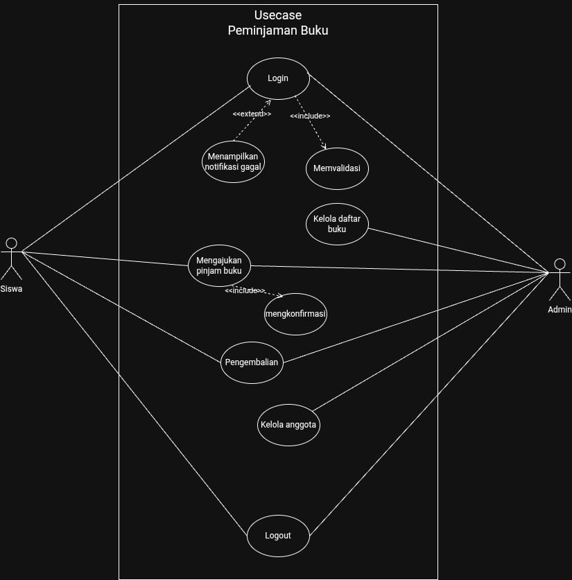
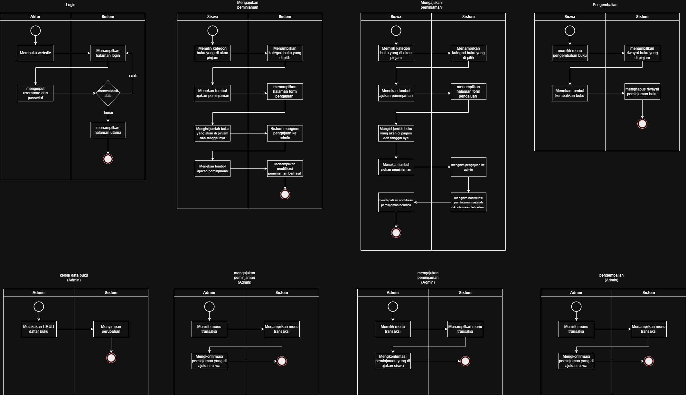
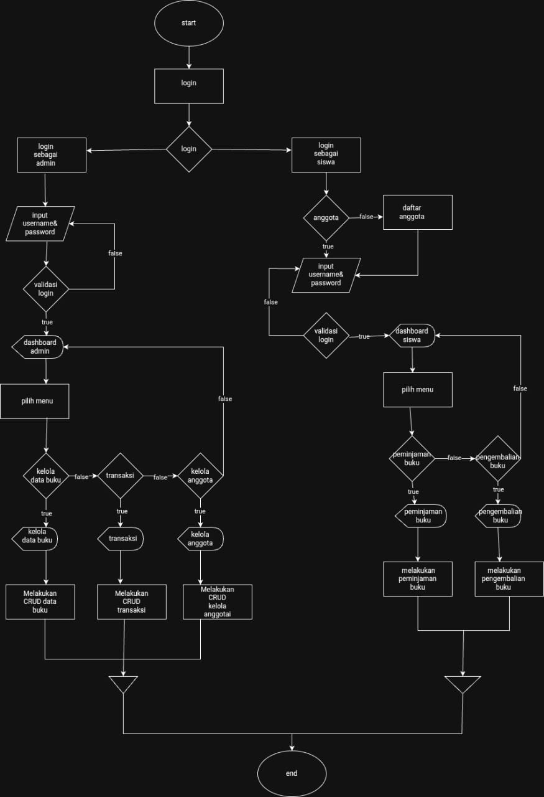

Sebagai Fullstack Developer, saya mengembangkan aplikasi peminjaman buku berbasis web untuk mendukung proses peminjaman dan pengembalian di perpustakaan. Use case diagram menggambarkan interaksi siswa dan admin, activity diagram menjelaskan alur login, peminjaman, dan pengembalian, sedangkan flowchart menunjukkan detail logika sistem dari login hingga transaksi. Aplikasi ini dibangun dengan konsep MVC menggunakan Laravel untuk backend dan HTML/CSS/JS untuk frontend.